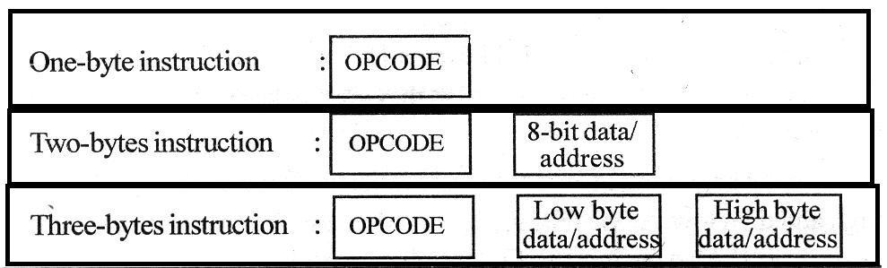

I'm finally learning Assembly!
Some many where the times that I wanted to learn real assembly programming but ended up quitting because of the lack of documentation. But that's not true, if you really want to you will always search a little deeper and find something! I will post here everything I learn and do with assembly.
A big shout out for this dude and his tutorials. kupala
Hello World
This will be on x86 and x86_64 not sure how it will go but my goal is to learn both. Let's start with a simple hello world. 64bit
To compile the code i made a simple bash script. Make sure to make it executable with chmod +x
Let's break it down. So, i already talked about the different segments of memory. In the data section we are defining what we want to print to the screen our Hello, World!. The text section is where we put our code, in this case just our main function. In our main function we are making a system call to print our text to the screen and and a system call to exit the program.
System calls
A system call of a syscall is when a program requests a service from the kernel. Therefore a system call is the fundamental interface between an application and the Operating System kernel. There are many syscalls available in the current version of the Linux kernel.
Let's look at the sys_write() syscall.
For every syscall it needs to passed arguments.
Syscalls inputs by Register
| Argument |
Register |
| ID |
rax |
| 1 |
rdi |
| 2 |
rsi |
| 3 |
rdx |
| 4 |
r10 |
| 5 |
r8 |
| 6 |
r9 |
| Argument Type | Argument Description |
| (1) File Descriptor |
0 (Standard Input)
1 (Standard Output)
2 (Standard Error)
|
| (2) Buffer | Location of the String to write |
| (3) Count | Length of the string |
Another table showing the registers used to pass the system call arguments.
Now there are various ways of making the call. In the x86_64 architeture the instruction is syscall.
Memory Segmentation
When a program its compiled, it's memory is divided into five segments:
- Text - The text segment, also called the code segment. This is where the assmbled machine language instructions of the program are located.
- Data and Bss - The data and bss segments are used to store global and static program variables. The data segment is filled with the initialized global and static variables, while the bss segment is filled with their uninitialized counterparts. Although these segments are writable, they also have a fixed size
- Heap
- Stack
As a program executes the RIP register is set to the first instruction in the text segment. The processor then follows an execution loop:
- 1 - Reads the instruction that RIP is pointing to
- 2 - Adds the byte length of the instruction to RIP
- 3 - Executes the instruction that was read in step 1
- 4 -Goes back to step 1
Write permission is disabled in the text segment, as it is not used to store variables, only code. This prevents people from actually modifying the program code. Another advantage of this segment being read-only is that it can be shared among different copies of the program, allowing multiple executions of the program.
About the stack:
The stack segment also has variable size and is used as a temporary scratch pad to store local function variables and context during function calls. This is what GDB's backtrace command looks at. When a program calls a function, that function will have its own set of passed variables, and the function's code will be at a different memory location in the text (or code) segment. Since the context and the RIP must change when a function is called, the stack is used to remember all of the passed variables, the location the RIP should return to after the function is finished, and all the local variables used by that function. All of this information is stored together on the stack in what is collectively called a stack frame . The stack contains many stack frames. It has first-in, last-out (FILO) ordering, which means the first item that is put into a stack is the last item to come out of it. The stack segment of memory is, a stack data structure, which contains stack frames. The ESP register is used to keep track of the address of the end of the stack, which is constantly changing as items are pushed into and popped off of it. Since this is very dynamic behavior, it makes sense that the stack is also not of a fixed size. Opposite to the dynamic growth of the heap, as the stack changes in size, it grows upward in a visual listing of memory, toward lower memory addresses. The FILO nature of a stack might seem odd, but since the stack is used to store context, it's very useful. When a function is called, several things are pushed to the stack together in a stack frame . The EBP register- sometimes called the frame pointer (FP) or local base (LB) pointer - is used to reference local function variables in the current stack frame. Each stack frame contains the parameters to the function, its local variables, and two pointers that are nec- essary to put things back the way they were: the saved frame pointer (SFP) and the return address. The SFP is used to restore EBP to its previous value, and the return address is used to restore RIP to the next instruction found after the function call. This restores the functional context of the previous stack frame.
CPU
We are going to look at the intel 8085. The 8085 is a conventional von Neumann design based on the Intel 8080. Is a 8-bit microprocessor and can address, with it's 16 lines, up to 64K memory positions (2^16 = 65536bytes or 64Kb). It has 6200 transistors. Like every processor, it needs a clock or oscillator to synchronize the operations. The 8085 has a clock that generates a digital signal with 3,125 MHz.
8085 Terminals

Each CPU contains basicaly the following blocks:
Program Counter
Arithmetic and logic unit
Instruction Decoder
General-purpose registers
The CPU begins by looking at the program counter, and fetching whatever number
is stored in memory at the location specified. It is then passed on to the
instruction decoder
which figures out what the instruction means. This includes what process
needs to take place (addition, subtraction, multiplication, data movement, etc.) and
what memory locations are going to be involved in this process. Computer
instructions usually consist of both the actual instruction and the list of memory
locations that are used to carry it out.
Now the computer uses the
data bus
to fetch the memory locations to be used in
the calculation. The data bus is the connection between the CPU and memory.
In addition to the memory on the outside of the processor, the processor itself has
some special, high-speed memory locations called registers.
The 8085 has several registers:
General-purpose registers - There are 6 general purpose registers in 8085 processor, i.e. B, C, D, E, H and L. Each register can hold 8-bit data.
These registers can work in pair to hold 16-bit data and their pairing combination is like B-C, D-E and H-L.
Program counter - It is a 16-bit register used to store the memory address location of the next instruction to be executed. Microprocessor increments the program whenever an instruction is being executed, so that the program counter points to the memory address of the next instruction that is going to be executed.
Stack pointer - It is also a 16-bit register works like stack, which is always incremented/decremented by 2 during push and pop operations.
Temporary register - It is an 8-bit register, which holds the temporary data of arithmetic and logical operations.
Flag register - It is an 8-bit register having five 1-bit flip-flops, which holds either 0 or 1 depending upon the result stored in the accumulator.
There are 5 flip-flops:
Sign (S)
Zero (Z)
Auxiliary Carry (AC)
Parity (P)
Carry (C)
Instruction register and decoder - It is an 8-bit register. When an instruction is fetched from memory then it is stored in the Instruction register. Instruction decoder decodes the information present in the Instruction register.
Now that the CPU has retrieved all of the data it needs, it passes on the data and
the decoded instruction to the arithmetic and logic unit for further processing. Here the instruction is actually executed. After the results of the computation have
been calculated, the results are then placed on the data bus and sent to the
appropriate location in memory or in a register, as specified by the instruction.
8085 Architecture
Instruction Set

Let's look at instructions. An instruction is a binary pattern designed inside a cpu to perform a specific function. The size of 8085 instructions can be 1 byte, 2 bytes or 3 bytes. The 8085 has 246 instructions, each instruction is represented by an 8-bit binary value. These 8-bits of binary value is called Op-code or instruction Byte.
The 1-byte instruction has an opcode alone.
The 2 bytes instruction has an opcode followed by an eight-bit address or data.
The 3 bytes instruction has an opcode followed by 16 bit address or data. While storing the 3 bytes instruction in memory, the sequence of storage is, opcode first followed by low byte of address or data and then high byte of address or data.